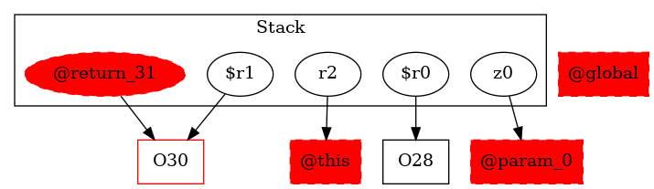

-1 : r2 := @this: Test5BaseClass
-1 : z0 := @parameter0: boolean
28 : $r0 = new testcase.Test5
28 : specialinvoke $r0.|testcase.Test5: void |init|()|()
29 : if z0 == 0 goto return null
30 : $r1 = new testcase.Test5
30 : specialinvoke $r1.|testcase.Test5: void |init|()|()
31 : return $r1 ->class soot.jimple.internal.JReturnStmt {getOp: class soot.jimple.internal.JimpleLocal}
35 : return null
